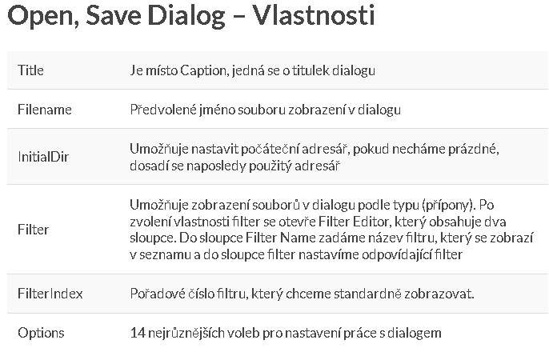
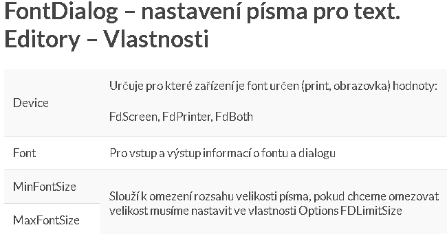

Standardní dialogové boxy
Předdefinované standardizované dialogové boxy WINDOWS najdeme na
paletě komponent v záložce DIALOGS. V době návrhu aplikace se na
formuláři objevují jako malé zástupné ikony, které nejsou za běhu
programu vidět dokud nezavoláme jejich nejdůležitější vlastnost EXECUTE.
Poté se zobrazí příslušný dialogový box, chod programu je pozastaven a
existují 2 způsoby ukončení dialogu – OK, Cancel
  ColorDialog – nastavení barev
Umožňuje uživateli zvolit barvy pro různé části prostředí.
Vlastnosti
Color – se používá pro aktuální barvu na vstupu a vybranou barvu na výstupu